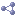

Ontology 'UDFR - Schema'
Imports
owl:imports

dct:
http://www.w3.org/2004/02/skos/core
dc:
foaf:
sysont:OntoWiki System Ontology
rdf:type
owl:Ontology
rdfs:label
UDFR - Schema
owl:imports
dct:
http://www.w3.org/2004/02/skos/core
dc:
foaf:
sysont:OntoWiki System Ontology
owl:versionInfo
UDFR schema ontology, version 1.0, 2012-02-01
Generated with
TopBraid Composer
by
TopQuadrant, Inc.